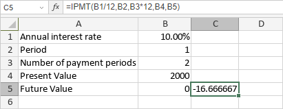

IPMT funkcija
IPMT funkcija je jedna od finansijskih funkcija. Koristi se za izračunavanje iznosa kamate za investiciju na osnovu određene kamatne stope i konstantnog rasporeda uplata.
Sintaksa
IPMT(rate, per, nper, pv, [fv], [type])
IPMT funkcija ima sledeće argumente:
| Argument | Opis |
|---|---|
| rate | Kamatna stopa za investiciju. |
| per | Period za koji želite da izračunate iznos kamate. Vrednost mora biti između 1 i nper. |
| nper | Broj uplata. |
| pv | Trenutna vrednost uplata. |
| fv | Buduća vrednost (npr. stanje novca nakon poslednje uplate). Ovaj argument je opcion. Ako se izostavi, funkcija pretpostavlja da je fv 0. |
| type | Period kada su uplate dospele. Ovaj argument je opcion. Ako je postavljen na 0 ili izostavljen, funkcija pretpostavlja da su uplate na kraju perioda. Ako je type postavljen na 1, uplate su na početku perioda. |
Napomene
Isplaćeni novac (npr. depoziti na štednju) predstavlja se negativnim brojevima; primljeni novac (npr. dividende) predstavlja se pozitivnim brojevima. Jedinice za rate i nper moraju biti konzistentne: koristi N%/12 za rate i N*12 za nper kod mesečnih uplata, N%/4 za rate i N*4 za nper kod kvartalnih uplata, N% za rate i N za nper kod godišnjih uplata.
Kako primeniti IPMT funkciju.
Primeri
Slika ispod prikazuje rezultat koji vraća IPMT funkcija.
